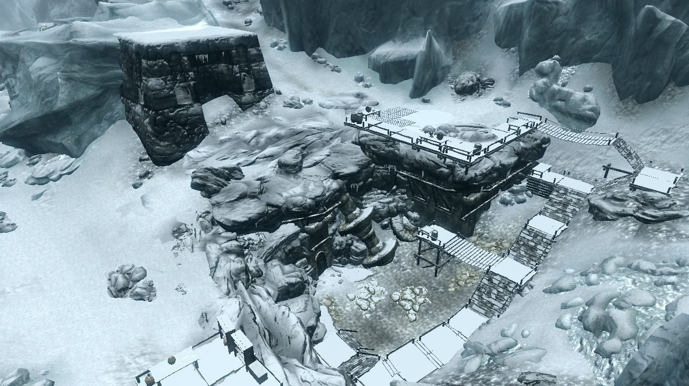
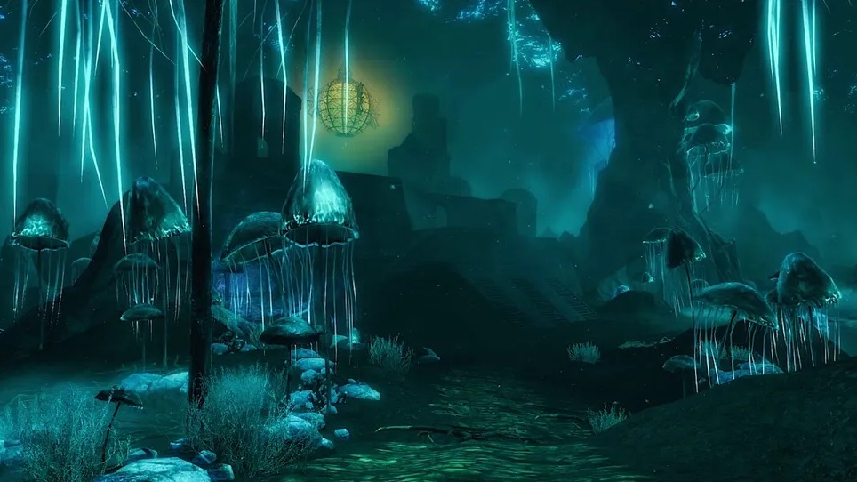

La Garganta del Mundo
La Garganta del Mundo es la montaña más alta de Skyrim y uno de los lugares más importantes para los maestros de la Voz. En sus laderas se encuentra Alto Hrothgar, hogar de los Barbas Grises.
Skyrim es una de las nueve provincias de Tamriel y se encuentra en la región Norte y con salida al mar del continente. Es la tierra ancestral de los nórdicos, conocida por sus montañas, bosques, tundras y antiguas ruinas.
Su territorio se encuentra dividido en varias regiones llamadas
comarcas, cada una con sus propios paisajes,
ciudades y lugares de interés.
Utilizá el mapa interactivo para recorrer la provincia y descubrir
ciudades, fortalezas, ruinas antiguas, cuevas y otros lugares
importantes de la región.
Más allá de las grandes ciudades, los caminos de Skyrim esconden templos, ruinas, fortalezas y lugares relacionados con algunos de los acontecimientos más importantes de la historia de Tamriel.
La Garganta del Mundo es la montaña más alta de Skyrim y uno de los lugares más importantes para los maestros de la Voz. En sus laderas se encuentra Alto Hrothgar, hogar de los Barbas Grises.
Saarthal fue uno de los primeros asentamientos de los nórdicos en Skyrim. Según la tradición, la ciudad fue destruida durante la Noche de las Lágrimas, un acontecimiento que marcó profundamente la historia de los nórdicos.

Oculto bajo las montañas de Skyrim se encuentra Alfheim Negro, una enorme región subterránea relacionada con la antigua civilización dwemer. Sus cavernas esconden ruinas, criaturas y secretos que permanecieron ocultos durante siglos.
